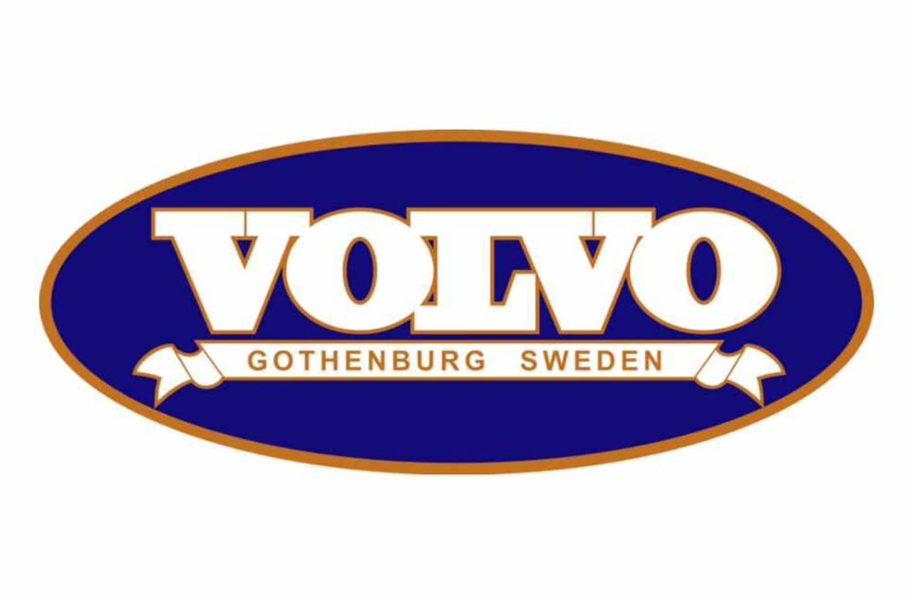
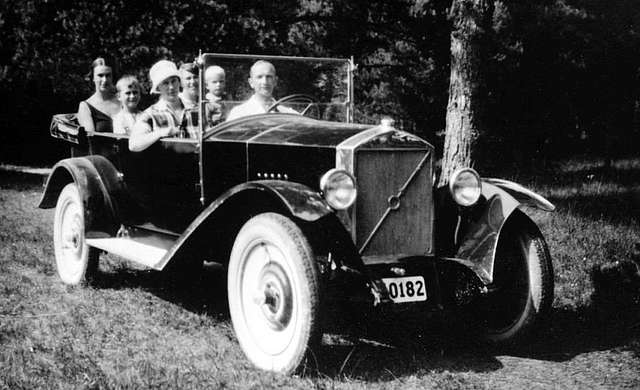
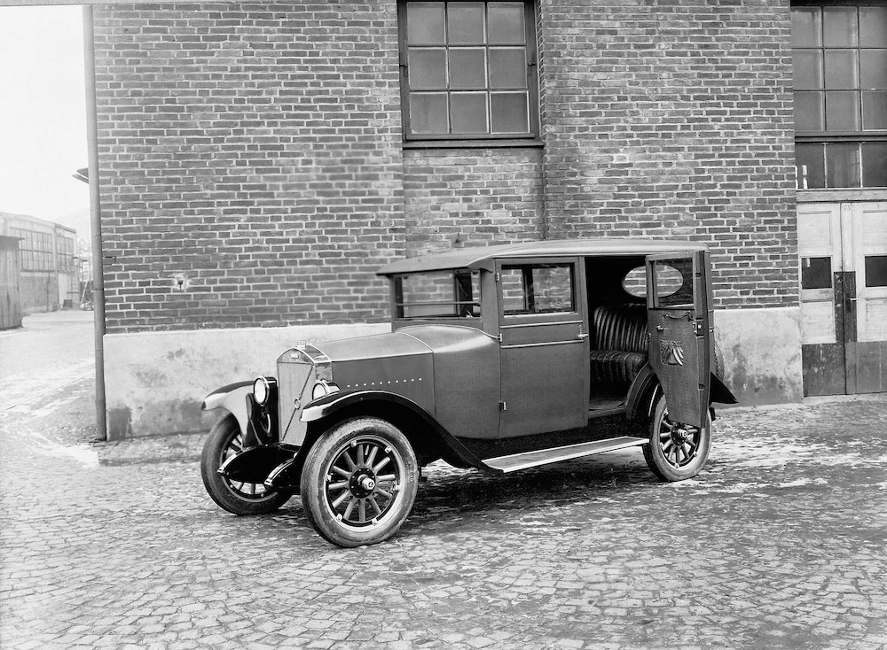

Evolution of Safety, Innovation, and Corporate Strategies of Volvo
Introduction: The Epistemology of Swedish Engineering and the Formation of a Global Automotive Paradox
The history of global car manufacturing is full of examples of corporations that built their image on speed, ostentatious luxury, mass accessibility, or aggressive design. In contrast, the Swedish company Volvo chose a unique, unprecedented, and seemingly paradoxical path, making the safety of human life, uncompromising engineering reliability, and absolute utility its ontological foundation. Since its founding in 1927, this brand has transformed from a small local manufacturer focused exclusively on creating vehicles for the harsh Scandinavian climate into a transnational giant whose patents, innovations, and corporate solutions have saved millions of lives worldwide. The evolution of Volvo is a testament to how a deep commitment to core values can become a powerful catalyst for commercial success, allowing the company to overcome economic crises, ownership changes, and global paradigm shifts.

Analyzing Volvo's historical path requires a comprehensive approach, as the company's development occurred across several parallel planes: the evolution of passive and active safety systems, radical design transformations from "boxy" shapes to streamlined silhouettes, the formation of global strategic alliances with competitors, and the creation of some of the most innovative and psychologically astute advertising campaigns in marketing history. This report offers a comprehensive overview of Volvo's history, starting from the brand's conceptualization by a ball-bearing manufacturer, through the era of global expansion, its famous motorsport participation using family estates, collaborations with giants like Porsche, Lotus, and Renault, to the modern stage of electrification and hydrogen fuel cell development under the umbrella of Geely and Volvo Group.
Special attention in this study is given to deep cause-and-effect relationships. It examines not only the timeline of the company's most iconic cars but also how specific engineering oddities (such as heartbeat sensors in the cabin or external pedestrian airbags) and creative advertising slogans of the 1990s and 2000s shaped public perception of the brand. This report demonstrates how the philosophy of "human-centricity" allowed the Swedish manufacturer to survive fierce competition, preserving its unique identity regardless of who held the controlling stake.
The Birth of a Legend: From Ball Bearings to the Automotive Industry (1915 - 1930s)
The historical roots of the Volvo brand lie deep in Sweden's metallurgical and mechanical engineering industry, renowned for its high-quality steel. In 1915, SKF (Svenska Kullagerfabriken), which was already a global leader in the design and production of ball and roller bearings, officially registered the "Volvo" trademark. The name itself is an ingeniously simple semantic and marketing solution. It derives from the Latin verb "volvere," meaning "to roll," conjugated in the first person singular—"I roll." Initially, SKF management planned to release a new series of ball bearings, bicycles, transmissions, and other transport equipment under this brand, but the outbreak of World War I forced the company to pivot to military needs, and the new brand was temporarily "frozen."

The revival of the idea to create a native Swedish car under the Volvo brand occurred only in 1926, thanks to the energy and synergy of two outstanding individuals: Assar Gabrielsson, who at the time worked as a sales manager at SKF (and had previously sold eggs), and Gustaf Larson, a talented mechanical engineer. Their shared vision was based on a deep analysis of the local market: imported cars (mostly American-made) were completely unsuited to Scandinavian realities. They quickly failed, broke down, and literally fell apart due to the terrible quality of Swedish roads and extreme winter temperatures. Gabrielsson and Larson realized that Sweden needed its own incredibly durable car that could meet the climate's challenges. Securing financial backing from SKF, they reactivated the Volvo brand and began production. Their corporate philosophy was built on absolute transparency and honesty from the very beginning. An early company motto, which hung in their shared office, read: "What you can't say to me so that everyone can hear, may as well be left unsaid." This culture of openness became the foundation for future innovations.


Release of the First Car and Formation of Symbolism
The historic moment arrived on the morning of April 14, 1927, when the company's first production car rolled out of the factory gates on the island of Hisingen (Gothenburg)—the Volvo ÖV 4 (Öppen Vagn 4 cylindrar), unofficially nicknamed "Jakob" by employees. This open four-cylinder phaeton was built on a sturdy ash and beech frame clad in sheet metal painted deep dark blue with black fenders. The car cost 4,800 Swedish kronor, making it a premium product for its time. However, the founders' first strategic and climatic miscalculation was releasing an open-top car in a country where cold and snow dominate most of the year. Because of this, Swedish consumers were in no rush to buy the novelty, and only 297 units were sold in the first year. The situation was quickly rectified with the introduction of the closed-body PV4 model, which cost 1,000 kronor more but guaranteed winter comfort.


Simultaneously with the release of the first car, the company's logo was approved, which spawned many myths. Contrary to the popular but entirely false stereotype that the logo is a symbol of masculinity or the male sex, it is actually the ancient alchemical and chemical symbol for iron—a circle with an arrow pointing diagonally upward and to the right. This ideogram, known as the "Iron Mark," was chosen deliberately to evoke associations with the centuries-old traditions of the Swedish metallurgical industry, the unbreakable strength of steel, and structural durability. The famous diagonal stripe on the radiator grille, which today is an integral design element of every Volvo car, initially had no aesthetic significance: it was purely a technical necessity to securely attach the heavy chrome logo to the radiator. Over the years, this engineering detail evolved into a powerful decorative brand symbol.
The World War II Era and the Birth of the Total Safety Paradigm (1940s - 1950s)
Sweden's political neutrality during World War II was a key factor in Volvo's survival and subsequent technological leap. While most European automakers (in Germany, France, Britain) suffered from bombings or were forced to completely convert their factories to military production, Volvo was able to continue civilian research, albeit facing material shortages. This period became a turning point in the brand's ideology: management decided that passenger safety should become the primary differentiator for their products in the post-war market.
The company launched a crash-testing program unprecedented for its time. Lacking modern computer simulations and high-speed cameras, Volvo engineers used massive mechanical pulley and winch systems to accelerate cars and crash them at high speeds into concrete blocks or metal barriers. These rigorous empirical tests revealed the critical structural vulnerabilities of cars of that era and led to the development of solutions that put them decades ahead of the global industry.
The result of this intensive research was the presentation of the Volvo PV444 model in Stockholm in 1944, nicknamed the "Little Volvo." This compact car revolutionized both production efficiency and approaches to protecting the human body during accidents. Several epoch-making innovations were implemented in the PV444:
Unibody Construction:
The PV444 became the company's first car to abandon the traditional, heavy ladder frame in favor of a self-supporting body structure. This not only reduced the overall weight of the car and made production cheaper, but also significantly increased the efficiency of kinetic energy absorption during an impact.
Safety Cage:
The concept of a rigid "safety cage" around the passenger compartment was implemented in mass production for the first time. This cage was designed to remain intact even with severe deformation of the front or rear of the car. It is important to note that it took other global manufacturers about 30 years to make the safety cage a de facto standard.
Laminated Windshield:
The car was equipped with a "triplex" type windshield. Until then, accidents were often accompanied by horrific facial and eye injuries because the windshield would shatter into large, sharp shards. Volvo's laminated glass would crack upon heavy impact, covering with a spiderweb pattern, but remained in the frame, saving passengers from lethal cuts.